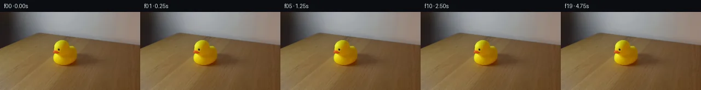

![首帧]()

Round 00
2026-11-06T08:26:38.071895+00:00像素候选变化代码 +81/−0inspection 更新
pixels 500834436cef15f1 · code c2b413b955f1f296
查看本轮 generate.py 真实 diff
--- previous/generate.py
+++ current/generate.py
@@ -0,0 +1,81 @@
+#!/usr/bin/env python3
+"""PixelWorld-Vision-Input generator for case_0063.
+
+Scene (from prompt.txt): locked-off static single shot, constant real-time
+framerate, plain wall behind a light-brown wooden table, and a yellow rubber
+duck that SITS STATIONARY for the whole 5 seconds.
+
+Physical continuation: no object, camera, or lighting change occurs, so
+frames 00..19 are exactly the first_frame.png pixel array. Frame 00 is
+guaranteed byte-identical to first_frame.png; all inter-frame deltas are
+exactly zero (verified numerically after writing).
+"""
+from pathlib import Path
+import shutil
+import numpy as np
+from PIL import Image, ImageDraw
+
+import artifact_io
+
+CASE = Path(__file__).resolve().parent
+FIRST = CASE / "first_frame.png"
+
+
+def build_frames():
+ src = np.array(Image.open(FIRST).convert("RGB"))
+ assert src.shape == (144, 256, 3) and src.dtype == np.uint8, src.shape
+ # Static scene: every frame is the same locked-off exposure.
+ frames = np.broadcast_to(src, (20, 144, 256, 3)).copy()
+ return frames
+
+
+def build_transition_check(frames, out_path):
+ """Grid of consecutive-frame |delta| maps (x10) plus numeric stats."""
+ cols, rows, tw, th = 5, 4, 190, 107
+ pad, top = 8, 46
+ sheet = Image.new("RGB", (cols * tw, top + rows * th + 30), (25, 28, 35))
+ draw = ImageDraw.Draw(sheet)
+ draw.text((6, 6),
+ "Transition check |frame[t]-frame[t-1]| x10 (all zero = static clip)",
+ fill=(235, 240, 248))
+
+ deltas = []
+ for t in range(1, 20):
+ d = np.abs(frames[t].astype(np.int16) - frames[t - 1].astype(np.int16))
+ deltas.append(d)
+ amp = np.clip(d * 10, 0, 255).astype(np.uint8)
+ cell = Image.fromarray(amp).resize((tw - 6, th - 18), Image.NEAREST)
+ c, r = (t - 1) % cols, (t - 1) // cols
+ x, y = c * tw + 3, top + r * th + 14
+ sheet.paste(cell, (x, y))
+ changed = int(np.count_nonzero(d))
+ label = f"{t-1:02d}->{t:02d} max {int(d.max())} chg {changed}"
+ draw.text((x, y - 12), label, fill=(150, 210, 150) if changed == 0 else (255, 170, 170))
+
+ all_d = np.stack(deltas)
+ summary = (f"19 transitions | global max|delta| = {int(all_d.max())} | "
+ f"total changed pixels = {int(np.count_nonzero(all_d))} | "
+ f"frames vs frame00 max|delta| = "
+ f"{int(max(np.abs(frames[t].astype(int) - frames[0].astype(int)).max() for t in range(20)))}")
+ draw.text((6, sheet.height - 24), summary, fill=(235, 240, 248))
+ sheet.save(out_path)
+
+
+def main():
+ frames = build_frames()
+
+ # Internal numeric precondition: every frame equals the source.
+ for t in range(20):
+ assert np.array_equal(frames[t], frames[0]), f"frame {t} differs"
+
+ artifact_io.save(frames, CASE)
+
+ # Guarantee frames/00.png is byte-identical to the provided first frame.
+ shutil.copyfile(FIRST, CASE / "frames" / "00.png")
+
+ build_transition_check(frames, CASE / "transition_check.png")
+ print("generate.py complete:", CASE, flush=True)
+
+
+if __name__ == "__main__":
+ main()